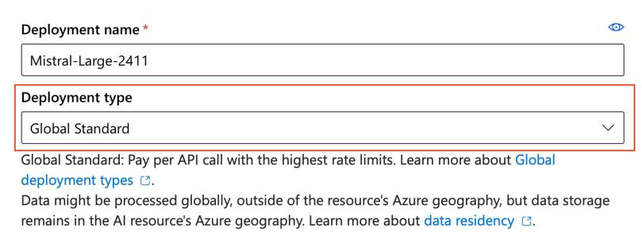
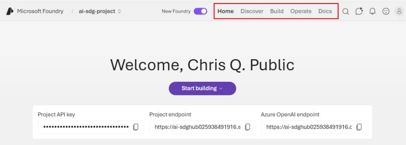
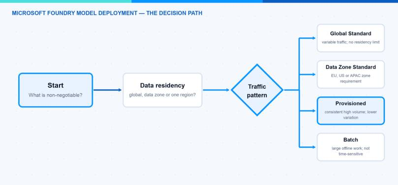
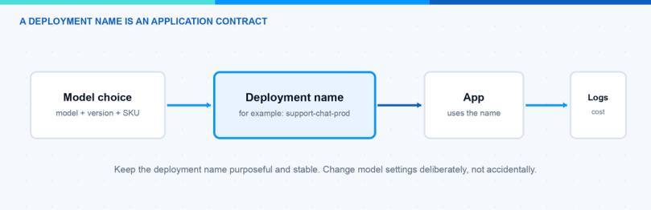

Seeing a model in the Microsoft Foundry catalog is not the same as having a model that an application can use. The bridge is the deployment. Think of it as the saved, named configuration that your app talks to. Your code does not call a vague catalog entry; it calls the deployment name you create.
That makes the portal form more important than it looks. It connects a model, a deployment type and a name that people and code will depend on. In this post I explain those three choices in plain English before you put a model behind an agent or an application.
The video below shows the practical deployment path in German. Here I add the questions that are easy to miss while the portal is open — and a simple path for a first deployment.
First, Know the Three Things You Are Choosing
Before you press Deploy, make sure you can point to these three things:
- Model: the capability you want to test, such as a chat or reasoning model.
- Deployment type: how the request is processed and which data boundary, billing and capacity options apply.
- Deployment name: the stable label that your Playground, script or app will use.
If you only remember one rule, make it this: the model is the engine; the deployment is the named connection to that engine. A clear name such as support-chat-dev is far easier to understand later than test-final-v4.

This Microsoft Learn screenshot shows the two fields I pause at first: Deployment name and Deployment type. The exact models and labels can vary by region and over time. Source: Microsoft Learn.

In the current portal, I start in Discover to find a model, then use Build > Models to validate the deployment that an application will call. Screenshot from Microsoft Learn.
Microsoft Foundry Model Deployment: More Than a Button
A model deployment joins four decisions that should stay visible:
- The model and version tell Foundry what capability you want to use.
- The deployment type determines the processing location, billing model and performance characteristics available for that model.
- The deployment name is what the client uses in requests.
- The environment tells everybody whether this is a short experiment, development, staging or production.
I do not treat these as four separate forms. They are one decision with different consequences. A technically good model can still be the wrong choice if the available deployment type does not meet the data boundary. A correct deployment can still cause avoidable work if its name does not make clear which application it belongs to.
For a first test, keep the click path short: choose a model that is available to your resource, read the processing note beside the deployment type, give the deployment a purpose-and-environment name, create it, then wait for its provisioning state to show Succeeded. Only after that should you start testing prompts in Playground.
Microsoft’s current documentation makes one point clear: the type affects where data is processed, whether requests are pay-per-token or use reserved capacity, and the expected throughput or latency variation. I choose the boundary and workload first. Then I pick the concrete SKU offered for the model and region. The deployment-type overview is the source I check when this decision matters.
There is no universal best deployment. Global Standard is a reasonable starting point for many variable workloads when global processing is acceptable. A Data Zone type is more useful when a defined data zone matters. Provisioned capacity is a different conversation: it is about reserved throughput and predictability, not a free performance switch. Batch is for large asynchronous work, not an interactive chat request.
Before I open the catalog, I write down four answers.
First: where may prompts and responses be processed? This is a design requirement, not a model preference. Global deployments may process inference data in any Azure region. Data Zone types process it inside the selected Microsoft data zone. Regional Standard types process it in the deployment region. Data stored at rest follows the designated geography, but that does not make the inference-processing choice disappear.
Second: what does the traffic look like? A proof of concept that sees a few prompts per day has a different need from a steady business service. Variable or bursty traffic usually fits a Standard type better. A workload with consistent high volume and a tight latency expectation may justify discussing provisioned throughput. I do not promise a latency number before I measure it with the real prompts and tools.
Third: what is the unit of ownership? Each environment needs a clear owner for cost and changes. In a small team, that can be one person and a short document. In a larger team, it should map to the application owner and the normal Azure change path.
Fourth: what will consume the deployment? A Playground test, an agent and a web application may share a model family, but they should not automatically share the same deployment. The client dependency should be intentional.

Use the Deployment Name as a Contract
The deployment name is the small detail that becomes important first. Microsoft requests use the deployment name in the model parameter. Once an app, agent or script depends on it, changing the name has the same effect as changing any other endpoint contract.
I keep names short and purposeful. A pattern such as <workload>-<environment> is enough for many teams:
| Name | What it communicates | A good use |
|---|---|---|
support-chat-dev | Development version of a support workload | Prompt and integration testing |
support-chat-prod | Stable production contract | The application configuration |
document-extract-eval | Bounded evaluation purpose | Comparing a model or filter configuration |
research-batch-prod | Offline production processing | Large asynchronous work |
I avoid model names and vague words such as new, final or test as the primary identifier. The model version can change as the deployment is deliberately updated. The workload name should remain understandable to a human reading a log, budget report or environment variable.
The same model can be deployed more than once under different names. Microsoft calls this out as useful when you need to compare configurations such as content filters. That is a good pattern for a controlled evaluation. It becomes a bad pattern when nobody can explain the difference between five deployments with nearly identical names. Put the reason in the deployment description or the project README.

Cheat Sheet: Which Type Fits the Workload?
| Deployment type | I consider it when | The trade-off to accept |
|---|---|---|
| Global Standard | Traffic changes, global processing is acceptable and I want a straightforward start | Best-effort service and more latency variation at scale |
| Data Zone Standard | The workload must stay in the EU, US or APAC data zone | Availability and model options may differ from the global path |
| Provisioned | A high, consistent workload needs reserved capacity and lower latency variation | Capacity is reserved; this needs forecasting and an economic reason |
| Batch | The work is large and asynchronous, such as offline enrichment | It is not for a user waiting in a chat window |
The table is a starting conversation, not compliance advice. Not every model supports every type in every region. I check the model availability before committing to the rest of the design. If the desired model and the required data boundary do not meet, changing the model may be safer than weakening the boundary.
One useful detail for experiments is instant access, which Microsoft currently labels preview. It can be convenient when you only need to try a supported model by name. I keep preview paths out of my default production design until the service terms, support level and operating model fit the use case.
Measure the Workload You Have
I do not choose capacity from a slide deck. I start with the prompts the application will receive. A short classification prompt, a long document extraction request and an agent that calls tools can look like the same workload on a diagram. They create different request sizes, output lengths and waiting times.
For an interactive scenario, I measure a small representative set at the expected concurrency. I keep the raw response time, failures, output length and the part of the journey that the user waits for. If a tool call or a data lookup dominates the experience, changing the model deployment type will not fix it.
For a batch scenario, I look at throughput, completion window and recoverability. A lower unit cost is useful only if the result still arrives when the downstream process needs it. The goal is not to create a perfect benchmark. It is to avoid buying predictability for a problem that lives somewhere else in the system.
The Simple Decision Tree I Use
My first question is not “Which is the most powerful model?” It is “Which requirement cannot move?” The answers create a short decision path:
- Data boundary first. If global inference processing is not acceptable, narrow the selection to Data Zone or regional options before comparing models.
- Workload second. Decide whether traffic is interactive and variable, steady and high-volume, or asynchronous in bulk.
- Model availability third. Check the actual provider, version, SKU and capacity available to the target Foundry resource. Do not copy a choice from another region without checking.
- Deployment name fourth. Create a stable name that matches the workload and environment.
- Test fifth. Use representative prompts and a realistic concurrency level. A single happy-path prompt gives no evidence about latency variance, tool failures or cost.
- Promote deliberately. If the test becomes useful, document the decision and create the production deployment through the team’s normal process.
This is also where a model router can help later. If one application has genuinely different request classes, routing can select a model under defined rules. It does not replace the first deployment decision. I describe that distinction in my Foundry model router and catalog deep dive.
Verify the Deployment Before an App Depends on It
The portal status is useful, but I also like an explicit verification step. Microsoft documents the Azure CLI path: list the models that are available to the resource, create the deployment with its model information and query the provisioning state. A deployment is ready only after the state reports Succeeded.
After the deployment succeeds, run an intentionally small request from the same identity and network path that the next component will use. If the next component is an application, do not stop at a developer’s interactive portal login. If it is an agent, test the agent path and any tool permission separately. The model responding is not proof that every surrounding dependency is ready.
I also check whether the configuration records the model version, type and expected capacity. The name alone is not enough to reconstruct the decision. It is the contract; the record explains the contract.
A Small Deployment Record Is Enough
The record for a Microsoft Foundry model deployment can stay short. Include the workload owner, environment, deployment name, model and version, type, data-processing assumption, expected traffic and date of the last verification. Add a link to the prompt set or test run when it exists.
This is useful when a model is updated, a team changes the app configuration or a cost question appears. Nobody has to reverse engineer the answer from a portal screen. The deployment becomes an understandable component of the application instead of a mysterious string in an environment variable.
Pitfalls I Now Avoid
The biggest mistake is deciding on a type from a label alone. “Global” and “EU” sound clear, but the exact processing wording and availability are part of the service documentation. I read the current documentation, then involve the right security or privacy contact before calling a workload production-ready.
The next mistake is treating capacity as a number to maximise. More capacity is not automatically better. First check the request pattern, output length, tool use and the expected number of concurrent users. Then measure. Provisioned capacity is useful when the workload makes the reservation worthwhile; it is not a substitute for a realistic test.
Another common problem is reusing a development deployment in production because it already works. This leaves test prompts, experimental filters and production cost in the same place. A separate named production deployment creates a clearer rollback and ownership path.
Finally, do not hard-code a temporary portal choice in many places. Put the deployment name in one configuration boundary. When the team deliberately changes the deployment, there should be one obvious place to review the impact.
Where This Is Heading
For a first Microsoft Foundry model deployment, the practical goal is simple. Choose a type that respects the data boundary, create a name that an app can safely depend on and verify it before the next layer uses it. The rest can evolve with the workload.
The official Microsoft deployment guide is worth keeping close because model versions, availability and tooling move quickly. It also shows the exact properties required when you automate deployments with the CLI or Bicep.
From here, the next useful step is not necessarily another model. It can be a small Playground session that tests one agent task against the deployment with realistic prompts. That keeps the experiment focused and gives you evidence before more infrastructure is added.
I hope this is a little help.
Stay healthy, Cheers Jannik